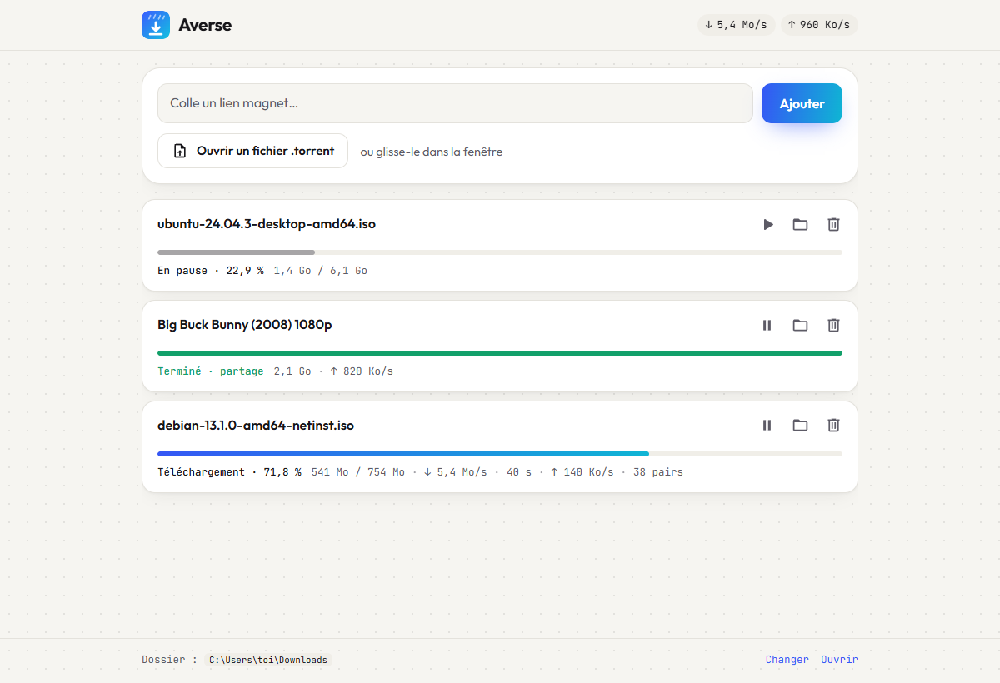
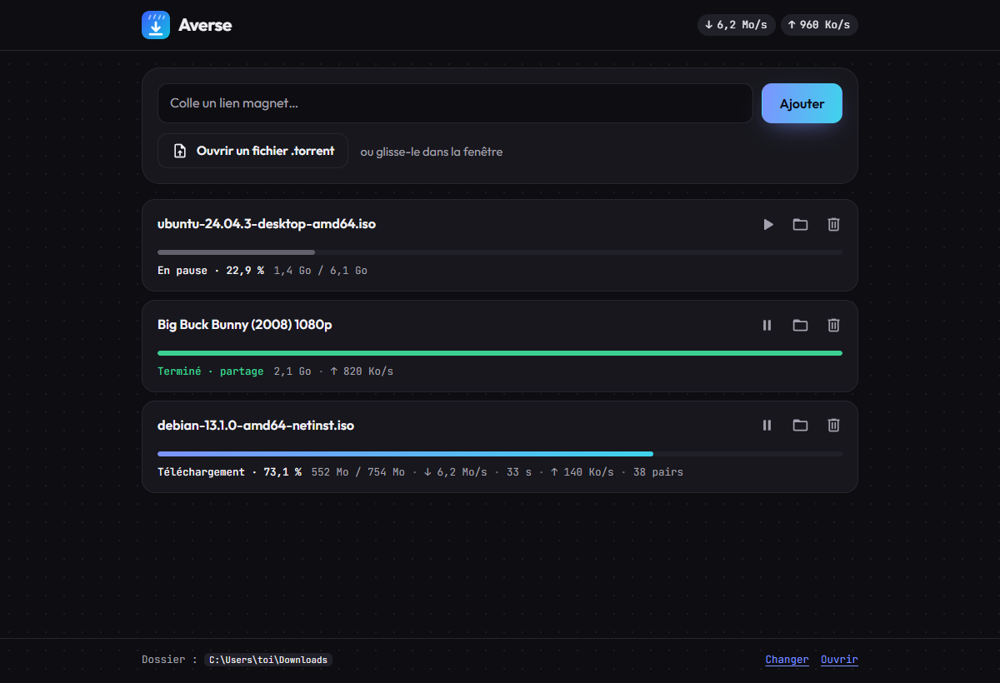
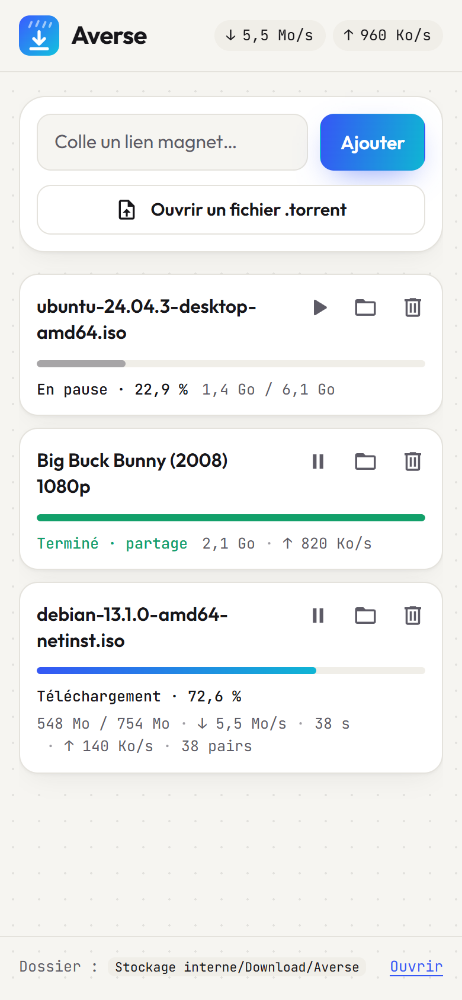
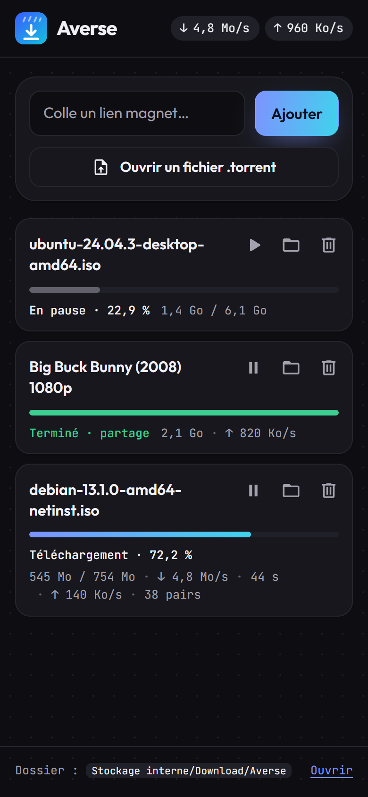

Le client torrent sans pub.
Colle un lien magnet ou ouvre un fichier .torrent : c'est téléchargé. Pas de pub, pas de logiciel caché à l'installation, pas de mille réglages. Sur PC et sur téléphone, gratuit et open source.
Dernière version : …PC Windows
Windows 10 / 11, 64 bits · un seul fichier
- Lance Averse.exe : il s'installe tout seul (menu Démarrer).
- Les liens magnet et les fichiers .torrent s'ouvrent ensuite dans Averse.
- Les fichiers arrivent dans Téléchargements.
Téléphone Android
Android 8 ou plus récent
- Installe l'APK (autorise les « applis inconnues »).
- Touche un lien magnet : Averse s'ouvre et télécharge.
- Ça continue écran éteint ; les fichiers vont dans Téléchargements/Averse.
Aperçu
Un champ, un bouton, la liste
La même appli sur le PC et le téléphone, en clair ou en sombre selon ton système.




Ce que tu as
Le nécessaire, rien de plus
Liens magnet et .torrent
Colle un lien, ouvre ou glisse un fichier. Les liens cliqués dans le navigateur arrivent directement.
Pause, reprise, retrait
Avec ou sans suppression des fichiers. Tout reprend où ça en était au prochain lancement.
Vitesse et temps restant
Progression, débit, pairs connectés. Les infos utiles, pas un tableau de bord.
Sans pub ni bloatware
Pas de bannière, pas d'offre « partenaire » à l'installation, pas de compte.
Moteur éprouvé
libtorrent sur Android, MonoTorrent sur PC : DHT, échange de pairs, chiffrement, UPnP.
Libre et gratuit
Code ouvert sur GitHub, sous licence MIT.
Questions fréquentes
Un souci ?
Windows affiche « Windows a protégé votre ordinateur »
Averse.exe n'est pas signé par un certificat payant. Clique sur Informations complémentaires puis Exécuter quand même. C'est à faire une seule fois.
Le pare-feu Windows demande une autorisation
Clique sur Autoriser : les autres participants pourront se connecter à toi, et les téléchargements iront plus vite. Si tu as refusé, Averse marche quand même, juste avec moins de sources.
Play Protect demande d'analyser l'appli
L'appli ne vient pas du Play Store, donc Google ne la connaît pas. Tu peux l'envoyer pour analyse ou l'installer sans analyse.
Où sont mes fichiers ?
Sur PC, dans Téléchargements (le lien « Changer » en bas de la fenêtre choisit un autre dossier). Sur Android, dans Téléchargements/Averse, visible depuis l'appli Fichiers. Le bouton dossier à côté de chaque torrent l'ouvre directement.
Ça continue si je ferme l'appli ?
Sur le téléphone, oui : tant qu'un téléchargement est en cours, une notification reste affichée et Averse continue, même écran éteint. Sur PC, fermer la fenêtre met tout en pause ; ça reprend au prochain lancement.
Attention aux données mobiles
Averse télécharge aussi en 4G / 5G. Pour les gros fichiers, mieux vaut être en Wi-Fi.
Comment mettre à jour ou désinstaller ?
Pour mettre à jour, retélécharge depuis cette page et lance le fichier : il remplace l'ancienne version, tes torrents sont gardés. Pour désinstaller sur PC : Paramètres → Applications → Averse. Tes fichiers téléchargés ne sont jamais supprimés.
Je peux tout télécharger ?
Averse ne fournit aucun contenu : c'est un outil, comme un navigateur. Les distributions Linux, les logiciels libres et les œuvres libres de droits, oui ; le reste dépend du droit d'auteur, à toi de le respecter.